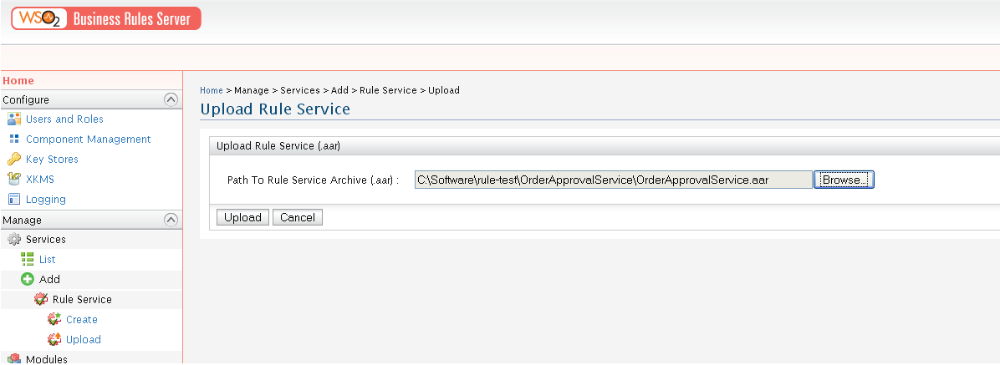
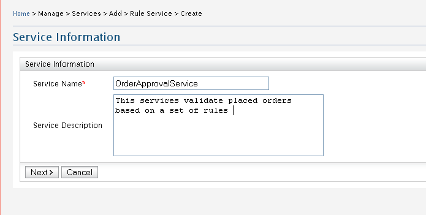
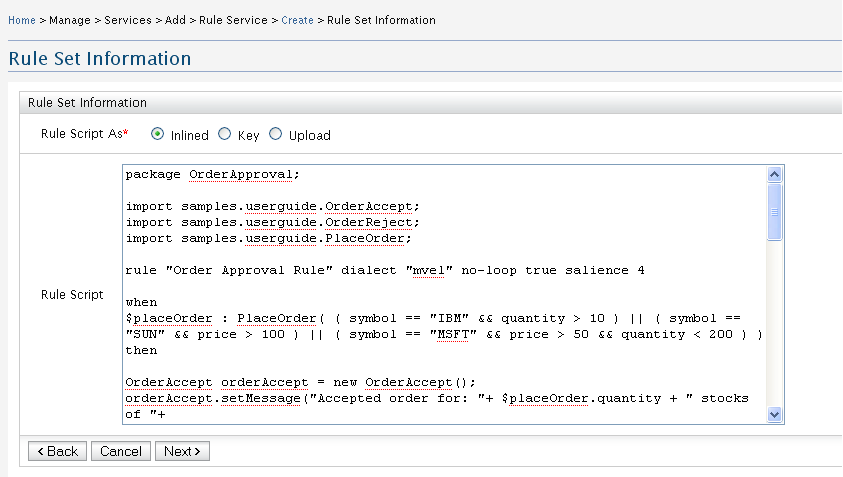
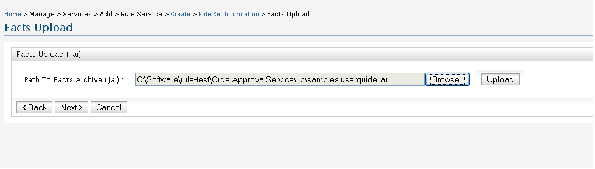
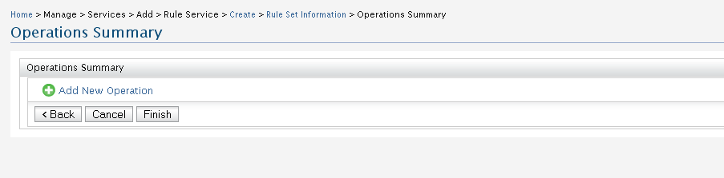
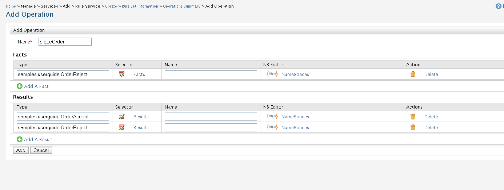

Rule Services
Use this configuration panel to create rule
services. There are two ways for it: Rule Service Upload and Rule Service
Wizard
Rule Service Upload
- Prepare a Rule Service Archive File (.aar) - Please refers the use
guide of the BRS product documentation
- Uploaded the created Rule Service Archive (.aar). Figure 1 shows this

Figure 1. Rule Service Upload UI
Rule Service Wizard
- Service Information - Specify the name and the description of the rule
service. Figure 2 shows this.

Figure 2. Service Information
- Rule Set Information - There are three ways to specify the rule set or
rule script. In-lined, upload or as a registry key. Figure 3 shows how to
give rule script as In-Lined.
Rule set creation properties can be used to specify the different types of rule sources.
For an example if the rule file is a decision table then user needs to add a property with
the name 'source' and value 'javax.rules.admin.RuleExecutionSet.source.decisiontable'.

Figure 3. Rule Set Information
- Facts Upload - In this step, you have to upload facts and results that
are used in your rule script. It should be a valid jar file. Figure 4 shows
this.

Figure 4. Facts Upload
- Operation Summary - This displays any operation available in the service.
You can uses add operation button to create a new operation. Figure 5 shows
this.

Figure 5. Operation Summary
- Add Operation - The operation name is mandatory.You can define the
required facts and results.The type is the only mandatory attribute for
both facts and results.Figure 6 shows this.

Figure 5. Add Operation